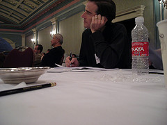

ISMIR 2006 - The Proceedings
One
of the best moments at ISMIR for me is when I get the brand new,
printed copy of the proceedings. The proceedings offer many months
of in-depth reading on MIR topics (I still have not got through all of
the papers in ISMIR 2005 proceedings). This year's proceedings are
noticably thinner than last year's. I talked briefly with Roger Dannenberg,
one of the editors of the proceedings. He explained that last
year there were so many papers that they had to split the conference
into multiple tracks, meaning that it was impossible to hear every talk
at the conference. This year they wanted a single track, which led to a
much shorter schedule, fewer accepted papers and a short
proceedings. Nevertheless, thanks to Roger and his co-editors
Kjell Lemstrom and Adam Tindale for putting this together.
The "Duke Listen's" Best Paper Title award this year goes to Megan Winget for her paper entitled "Heroic Frogs Save the Bow: Performing Musician's annotation and interaction behavior with written music'
The "Duke Listen's" Best Paper Title award this year goes to Megan Winget for her paper entitled "Heroic Frogs Save the Bow: Performing Musician's annotation and interaction behavior with written music'